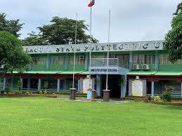
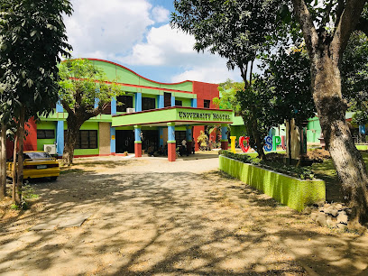

Other Campuses
Laguna State Polytechnic University (LSPU) is a premier state university in the Philippines, known for its commitment to academic excellence, research,
and community service.
With multiple campuses across Laguna, LSPU offers a diverse range of programs in engineering, education, business, agriculture, information technology, and more.
The university fosters innovation, leadership, and global competitiveness among its students through cutting-edge facilities, industry partnerships, and a dynamic learning environment.
LSPU is dedicated to producing skilled professionals and transformative leaders who contribute to national development and global progress

STA.CRUZ

Siniloan
